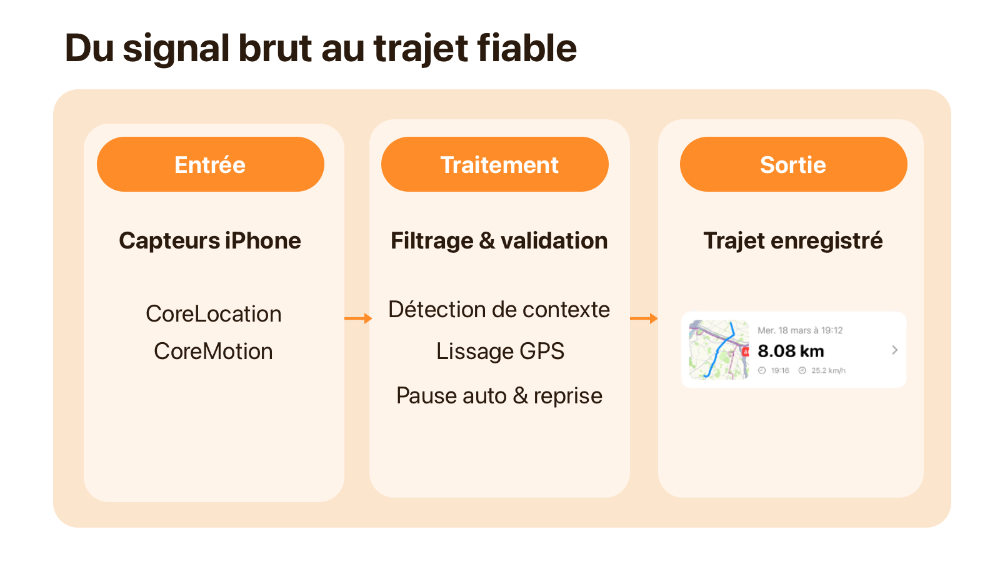
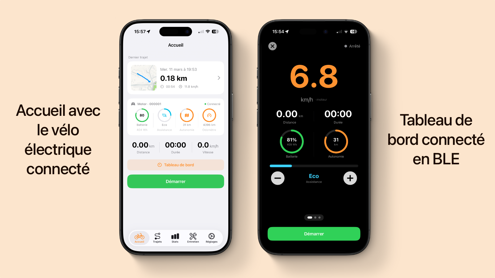
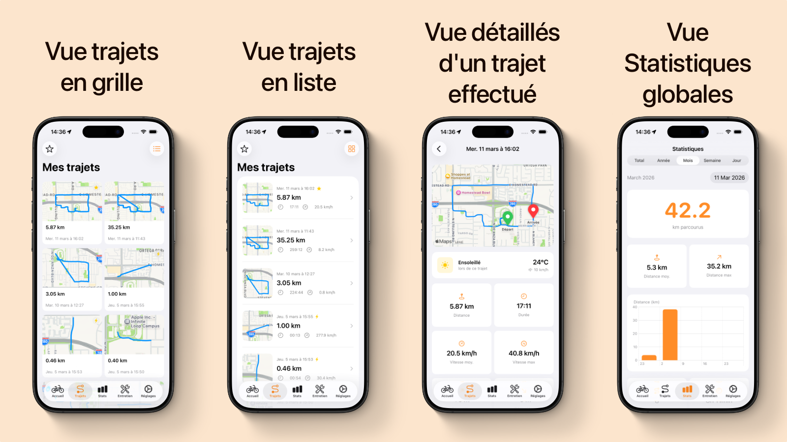
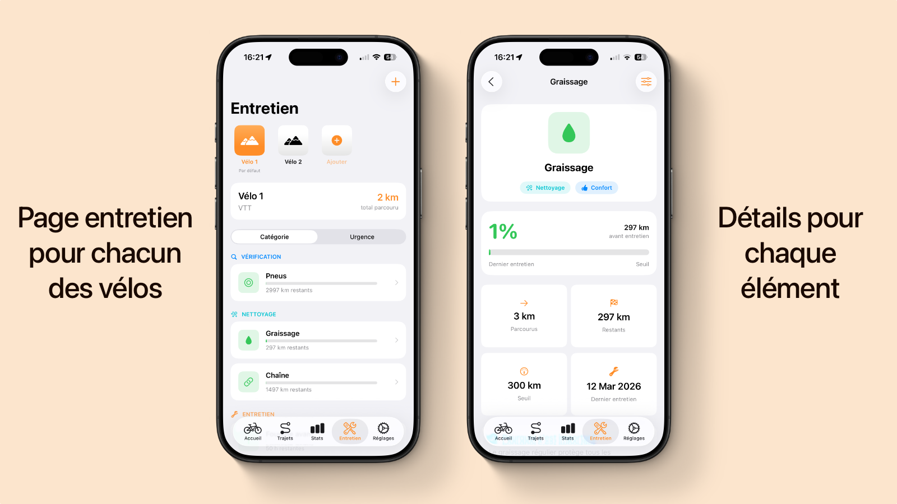
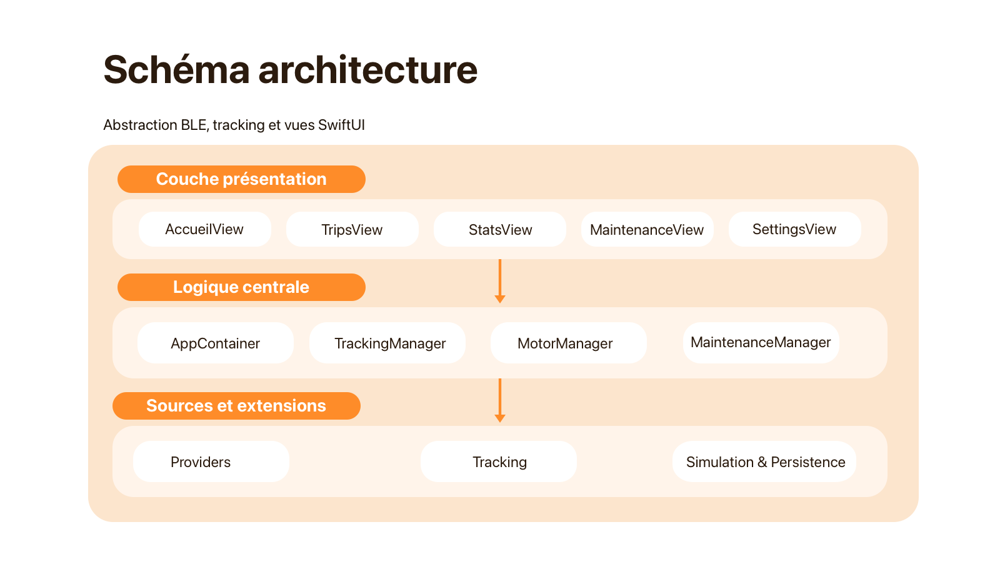

VeloTrack - iOS cycling tracking app
Native iOS app designed to automatically start bike tracking, centralize ride data and integrate selected eBikes through Bluetooth Low Energy.
Project origin
VeloTrack started from a concrete personal need: beginning a bike ride without friction. Many existing apps still require a manual action before every ride such as pulling out the phone, unlocking it and starting the recording, which breaks the experience.
The goal was therefore simple: get on the bike and let the app handle the automatic start and stop of tracking.
The project started from a minimal foundation with a full-screen map and start/stop buttons, then evolved through successive iterations: data persistence, automatic detection, statistics, maintenance and eBike integration.
Overview
VeloTrack is a native iOS app built in Swift and SwiftUI, designed to track performance, manage bike maintenance and control selected electric bikes directly from the iPhone.
The app already brings together the product's main building blocks: intelligent tracking, statistics, maintenance and eBike integration. It is still evolving through field validation and final product polish before broader release.
Main problems to solve
- Automatically trigger a ride without false positives or manual action
- Keep tracking reliable despite GPS, background execution and battery constraints
- Integrate eBike motors over BLE without usable manufacturer documentation
- Keep the experience simple while the internal logic becomes quickly complex
Technical stack
- Swift / SwiftUI : declarative UI with portrait and landscape support
- SwiftData : local persistence for rides, bikes and maintenance data
- CoreLocation : high-accuracy GPS tracking and battery-aware behavior
- CoreMotion : automatic activity detection for cycling, walking and driving
- CoreBluetooth : BLE integration with electric motors
- MapKit : mapping and real-time route rendering
- HealthKit : automatic export to Apple Health
- Combine : reactive synchronization of real-time data
Feature 1 - Intelligent tracking
The core of the app is a GPS tracking system with automatic start and stop, based on the combination of CoreLocation and CoreMotion.
- Automatic detection of ride start without user action
- Bike / walking / car distinction to avoid false positives
- Automatic stop when the ride ends or the user becomes stationary
- Filtering and smoothing pipeline to remove GPS jumps
- Tracking continuity between background and foreground
The challenge was not just detecting movement, but detecting the right context: starting at the right moment, avoiding trips by car or on foot, and keeping the tracking usable even when sensor data becomes noisy.

iOS tracking pipeline, from CoreLocation and CoreMotion sensors to the saved ride.
Feature 2 - eBike integration (BLE)
VeloTrack integrates electric motors through Bluetooth Low Energy using a protocol-oriented architecture, so that multiple manufacturers can be connected without rewriting the interface.
- Extensible architecture by manufacturer (Mahle, Bafang, Shimano, Bosch...)
- Reverse engineering of the Mahle ebikemotion protocol
- Real-time readout of battery, motor, odometer and range
- Control of assistance level directly inside the app
The most complex point was reverse engineering the Mahle protocol: identifying services, understanding the frame structure and transforming raw data into useful interface information, all without usable official documentation.
The architecture also includes integrations for Bafang and Shimano Steps. They are already present in the technical base, but their validation on real bikes still needs to be completed because I did not have access to physical models from these brands.

Feature 3 - Statistics, mapping and maintenance
- Ride history with distance, duration, speed, elevation, calories and weather
- Real-time route rendering and full post-ride visualization
- Map thumbnail generation with start and finish points
- Component wear tracking for chain, brakes and tires based on mileage
- Automatic bike attribution to rides and maintenance alerts
These blocks extend the original promise: not just recording a ride, but turning collected data into something genuinely useful day to day.


Notable architecture decisions
- MotorProvider protocol : BLE abstraction with a single interface for all manufacturers
- BLE reverse engineering : decoding Mahle binary frames without official documentation
- Tracking architecture : precision filtering, jump detection, speed smoothing and energy management
- Mock system : full simulation layer to evolve UI and logic without physical hardware
This architecture let me keep growing the app without rewriting it for every new feature: one interface for multiple motors, isolated tracking logic, and simulation tools to keep moving without always depending on hardware or real-world ride conditions.

Layered SwiftUI architecture with views, central logic, BLE providers and persistence.
What this project helped me develop
- Ability to design a mobile product from a precise user need
- Ability to handle advanced native iOS topics such as tracking, sensors, BLE and background execution
- Architectural reflexes that support growth without piling up fragile code
- Balance between real technical complexity and a simple user experience
What comes next
The next step is a real-world validation phase, probably through TestFlight, to measure tracking stability, background behavior, data readability and the actual day-to-day value of the eBike features.
If that phase confirms the app's solidity, the goal is to move toward an App Store release with the associated work: product polish, reliability fixes, listing preparation, visuals, clear positioning and launch communication aimed at first users interested in bike tracking and eBikes.
Over the longer term, an Android version would make sense if the app finds its audience and the usage confirms the value of expanding beyond the iPhone ecosystem.